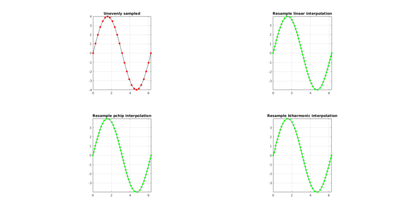
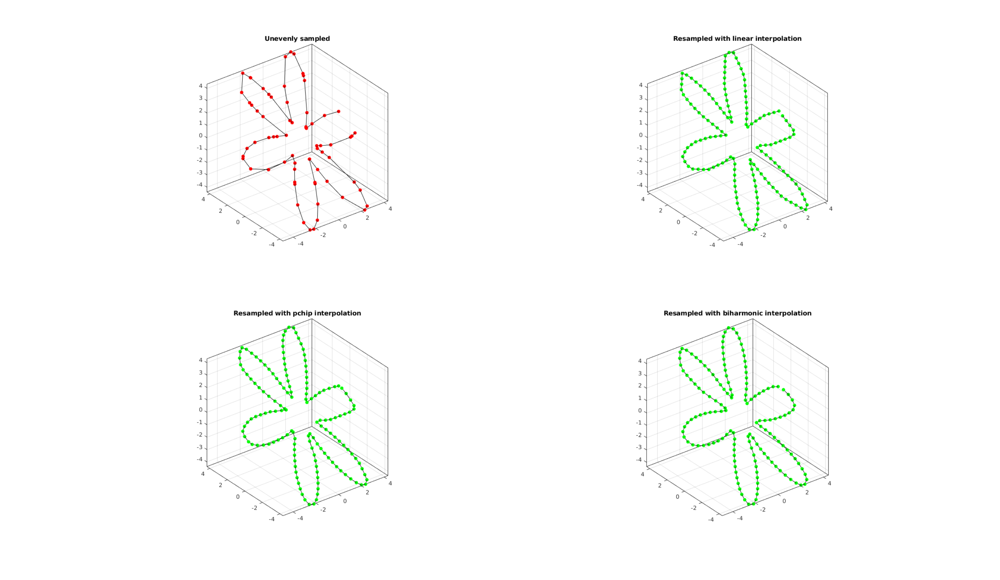
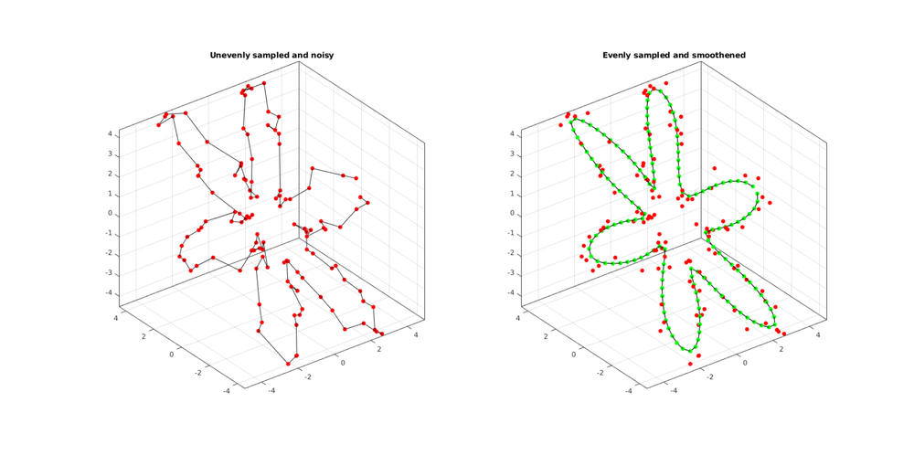

evenlySampleCurve
Below is a basic demonstration of the features of the evenlySampleCurve function.
Contents
ind2patch
Below is a demonstration of the features of the ind2patch function
clear; close all; clc;
Syntax
[Vg] = evenlySampleCurve(V,n,interpPar,closeLoopOpt);
Description
The evenlySampleCurve function samples a curve evenly in n points. The curve is parameterized using curve distance and can be closed loop if closeLoopOpt==1 (default=0). The resampling is performed using interpolation based on the method specified by interpPar. Available methods are those associated with interp1 i.e.: 'linear', 'nearest', 'next', 'previous', 'spline', 'pchip' (default), 'cubic'. Alternatively interpPar my be set as a scalar in the range 0-1 to use the csaps method for cubic spline based smoothening.
See also: interp1, csaps
Examples
Plot settings
markerSize1=20; markerSize2=10; lineWidth=1;
EXAMPLE 1: Evenly sampling a curve
%Simulating the case of an unevenly sampled curve
ns=25;
x=linspace(0,2*pi,ns);
y=4*sin(x);
V=[x(:) y(:)];
Resampling a curve evenly in terms of point spacing.
Below original and resampled curves are shown. Note that the original curve is sampled evenly allong x-axis but not in terms of point spacing. For instance the spacing is smallest in flat regions and lowest in steep regions.Various interpolation methods are shown.
interpMethods={'linear','pchip','biharmonic'};
closeLoopOpt=0; %Option for closed curve
n=ns*2; %New number of points
cFigure;
subplot(2,2,1); hold on;
title('Unevenly sampled');
plotV(V,'k-','MarkerSize',markerSize1);
plotV(V,'r.','MarkerSize',markerSize1);
view(2); grid on; axis equal; axis tight; box on;
drawnow;
for q=1:1:numel(interpMethods)
[Vg]=evenlySampleCurve(V,n,interpMethods{q},closeLoopOpt);
subplot(2,2,q+1); hold on;
title(['Resample ',interpMethods{q},' interpolation']);
plotV(Vg,'k-','MarkerSize',markerSize1);
plotV(Vg,'g.','MarkerSize',markerSize1);
view(2); grid on; axis equal; axis tight; box on;
end
drawnow;
 EXAMPLE 2: Evenly sampling a closed curve
%Simulating the case of an unevenly sampled loop curve ns=75; t=sort(linspace(0,2*pi,ns)+pi/10*rand(1,ns)); t=unique(t); %removing double points t=t(t<2*pi);%Removing 2*pi points since they are the same as the 0 point r=3+2.*cos(6*t); [x,y] = pol2cart(t,r); z=y; V=[x(:) y(:) z(:)]; interpMethod='pchip'; closeLoopOpt=1; n=200; [Vg]=evenlySampleCurve(V,n,interpMethod,closeLoopOpt);
Resampling a curve evenly in terms of point spacing.
Below original and resampled curves are shown. Note that the original curve is sampled evenly allong x-axis but not in terms of point spacing. For instance the spacing is smallest in flat regions and lowest in steep regions.Various interpolation methods are shown.
interpMethods={'linear','pchip','biharmonic'};
closeLoopOpt=1; %Option for closed curve
n=ns*2; %New number of points
cFigure;
subplot(2,2,1); hold on;
title('Unevenly sampled');
plotV(V,'k-','MarkerSize',markerSize1);
plotV(V,'r.','MarkerSize',markerSize1);
view(3); grid on; axis equal; axis tight; box on;
drawnow;
for q=1:1:numel(interpMethods)
[Vg]=evenlySampleCurve(V,n,interpMethods{q},closeLoopOpt);
subplot(2,2,q+1); hold on;
title(['Resampled with ',interpMethods{q},' interpolation']);
plotV(Vg,'k-','MarkerSize',markerSize1);
plotV(Vg,'g.','MarkerSize',markerSize1);
view(3); grid on; axis equal; axis tight; box on;
end
drawnow;
 EXAMPLE 3: Resampling and smoothening a curve based on CSAPS
By setting interpMethod as a scalar between 0 and 1 it is interpreted as a smoothening parameter for csaps based cubic smoothening.
ns=125; t=sort(linspace(0,2*pi,ns)+pi/10*rand(1,ns)); t=unique(t); %removing double points t=t(t<2*pi);%Removing 2*pi points since they are the same as the 0 point r=3+2.*cos(6*t); [x,y] = pol2cart(t,r); z=y; V=[x(:) y(:) z(:)]; %Adding noise V=V+0.2.*randn(size(V)); interpMethod=0.25; %Setting a scaler triggers csaps based smoothening closeLoopOpt=1; [Vg]=evenlySampleCurve(V,n,interpMethod,closeLoopOpt); cFigure; subplot(1,2,1); hold on; title('Unevenly sampled and noisy'); plotV(V,'k-','MarkerSize',markerSize1); plotV(V,'r.','MarkerSize',markerSize1); view(3); grid on; axis equal; axis tight; box on; subplot(1,2,2); hold on; title('Evenly sampled and smoothened'); plotV(Vg,'k-','MarkerSize',markerSize1,'lineWidth',lineWidth); plotV(Vg,'g.','MarkerSize',markerSize1,'lineWidth',lineWidth); plotV(V,'r.','MarkerSize',markerSize1); view(3); grid on; axis equal; axis tight; box on; drawnow;

GIBBON www.gibboncode.org
Kevin Mattheus Moerman, gibbon.toolbox@gmail.com
GIBBON footer text
License: https://github.com/gibbonCode/GIBBON/blob/master/LICENSE
GIBBON: The Geometry and Image-based Bioengineering add-On. A toolbox for image segmentation, image-based modeling, meshing, and finite element analysis.
Copyright (C) 2017 Kevin Mattheus Moerman
This program is free software: you can redistribute it and/or modify it under the terms of the GNU General Public License as published by the Free Software Foundation, either version 3 of the License, or (at your option) any later version.
This program is distributed in the hope that it will be useful, but WITHOUT ANY WARRANTY; without even the implied warranty of MERCHANTABILITY or FITNESS FOR A PARTICULAR PURPOSE. See the GNU General Public License for more details.
You should have received a copy of the GNU General Public License along with this program. If not, see http://www.gnu.org/licenses/.